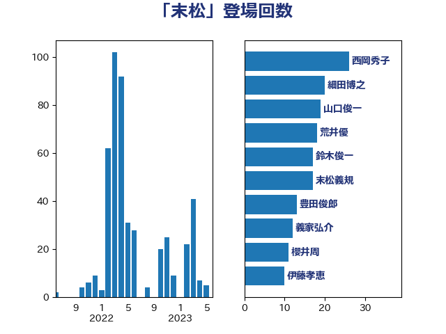

単語「末松」

| 西岡秀子 | 国民民主党 | 22 回 |
| 末松義規 | 立憲民主党 | 19 回 |
| 細田博之 | 自由民主党 | 19 回 |
| 荒井優 | 立憲民主党 | 16 回 |
| 豊田俊郎 | 自由民主党 | 13 回 |
| 義家弘介 | 自由民主党 | 12 回 |
| 薗浦健太郎 | 自由民主党 | 11 回 |
| 山口俊一 | 自由民主党 | 10 回 |
| 伊藤孝恵 | 国民民主党 | 9 回 |
| 末松信介 | 自由民主党 | 7 回 |
| 谷田川元 | 立憲民主党 | 7 回 |
| 三木圭恵 | 日本維新の会 | 6 回 |
| 櫻井周 | 立憲民主党 | 6 回 |
| 海江田万里 | 立憲民主党 | 6 回 |
| 越智隆雄 | 自由民主党 | 6 回 |
| 麻生太郎 | 自由民主党 | 6 回 |
| 小林茂樹 | 自由民主党 | 5 回 |
| 尾身朝子 | 自由民主党 | 5 回 |
| 浮島智子 | 公明党 | 5 回 |
| 舩後靖彦 | れいわ新選組 | 5 回 |
| 上野通子 | 自由民主党 | 4 回 |
| 仁木博文 | 無所属 | 4 回 |
| 勝目康 | 自由民主党 | 4 回 |
| 岬麻紀 | 日本維新の会 | 4 回 |
| 道下大樹 | 立憲民主党 | 4 回 |
| 青山周平 | 自由民主党 | 4 回 |
| 佐藤信秋 | 自由民主党 | 3 回 |
| 堀場幸子 | 日本維新の会 | 3 回 |
| 堂故茂 | 自由民主党 | 3 回 |
| 宮本周司 | 自由民主党 | 3 回 |
| 宮本岳志 | 日本共産党 | 3 回 |
| 山崎正恭 | 公明党 | 3 回 |
| 山本順三 | 自由民主党 | 3 回 |
| 岸田文雄 | 自由民主党 | 3 回 |
| 水岡俊一 | 立憲民主党 | 3 回 |
| 里見隆治 | 公明党 | 3 回 |
| 鈴木俊一 | 自由民主党 | 3 回 |
| 伊藤孝江 | 公明党 | 2 回 |
| 伴野豊 | 立憲民主党 | 2 回 |
| 勝部賢志 | 立憲民主党 | 2 回 |
| 和田有一朗 | 日本維新の会 | 2 回 |
| 城井崇 | 立憲民主党 | 2 回 |
| 安江伸夫 | 公明党 | 2 回 |
| 小沼巧 | 立憲民主党 | 2 回 |
| 小野泰輔 | 日本維新の会 | 2 回 |
| 山本左近 | 自由民主党 | 2 回 |
| 山東昭子 | 自由民主党 | 2 回 |
| 山田俊男 | 自由民主党 | 2 回 |
| 岩渕友 | 日本共産党 | 2 回 |
| 島尻安伊子 | 自由民主党 | 2 回 |
| 後藤田正純 | 自由民主党 | 2 回 |
| 松川るい | 自由民主党 | 2 回 |
| 池田佳隆 | 自由民主党 | 2 回 |
| 片山大介 | 日本維新の会 | 2 回 |
| 竹内真二 | 公明党 | 2 回 |
| 笠浩史 | 無所属 | 2 回 |
| 藤川政人 | 自由民主党 | 2 回 |
| 藤木眞也 | 自由民主党 | 2 回 |
| 赤羽一嘉 | 公明党 | 2 回 |
| 野田佳彦 | 立憲民主党 | 2 回 |
| 野田聖子 | 自由民主党 | 2 回 |
| 金田勝年 | 自由民主党 | 2 回 |
| 高見康裕 | 自由民主党 | 2 回 |
| 三浦信祐 | 公明党 | 1 回 |
| 佐々木さやか | 公明党 | 1 回 |
| 吉川元 | 立憲民主党 | 1 回 |
| 吉田とも代 | 日本維新の会 | 1 回 |
| 吉良よし子 | 日本共産党 | 1 回 |
| 国光あやの | 自由民主党 | 1 回 |
| 坂本祐之輔 | 立憲民主党 | 1 回 |
| 小西洋之 | 立憲民主党 | 1 回 |
| 山口壯 | 自由民主党 | 1 回 |
| 山口晋 | 自由民主党 | 1 回 |
| 岸信夫 | 自由民主党 | 1 回 |
| 平木大作 | 公明党 | 1 回 |
| 本田顕子 | 自由民主党 | 1 回 |
| 松山政司 | 自由民主党 | 1 回 |
| 松村祥史 | 自由民主党 | 1 回 |
| 林芳正 | 自由民主党 | 1 回 |
| 梅村みずほ | 日本維新の会 | 1 回 |
| 森屋宏 | 自由民主党 | 1 回 |
| 江田憲司 | 立憲民主党 | 1 回 |
| 河西宏一 | 公明党 | 1 回 |
| 浜地雅一 | 公明党 | 1 回 |
| 渡辺創 | 立憲民主党 | 1 回 |
| 牧山ひろえ | 立憲民主党 | 1 回 |
| 牧義夫 | 立憲民主党 | 1 回 |
| 田中英之 | 自由民主党 | 1 回 |
| 田嶋要 | 立憲民主党 | 1 回 |
| 田野瀬太道 | 無所属 | 1 回 |
| 神田憲次 | 自由民主党 | 1 回 |
| 秋本真利 | 自由民主党 | 1 回 |
| 菊田真紀子 | 立憲民主党 | 1 回 |
| 蓮舫 | 立憲民主党 | 1 回 |
| 藤巻健太 | 日本維新の会 | 1 回 |
| 谷公一 | 自由民主党 | 1 回 |
| 階猛 | 立憲民主党 | 1 回 |
| 高木かおり | 日本維新の会 | 1 回 |